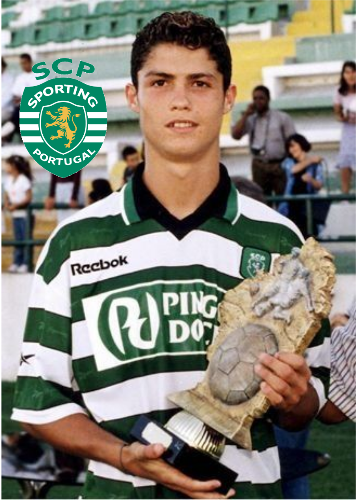
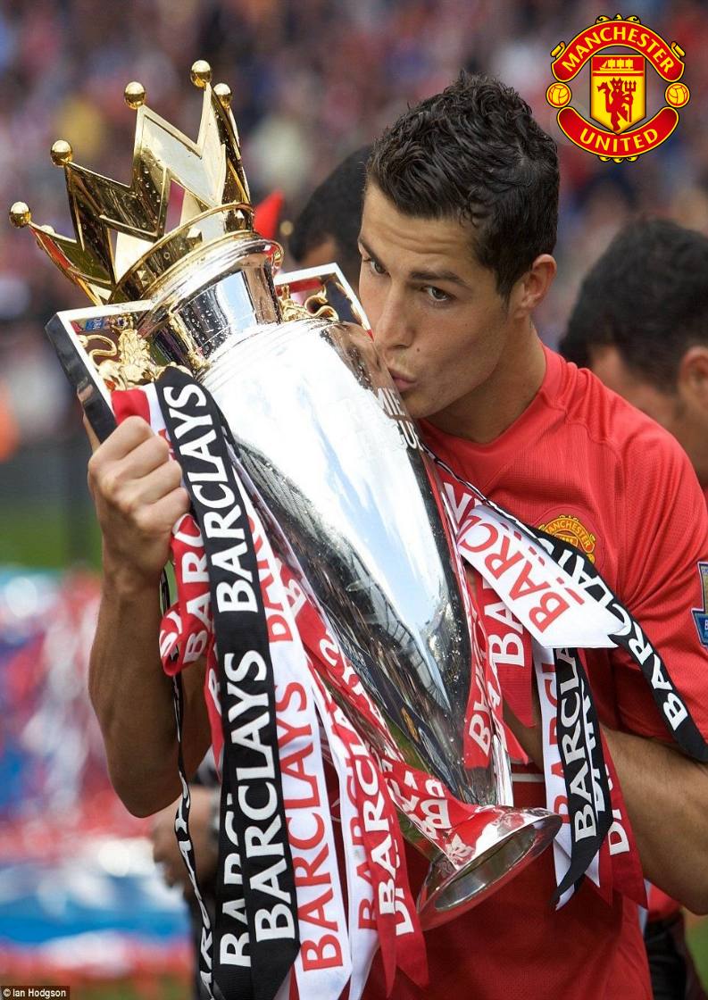
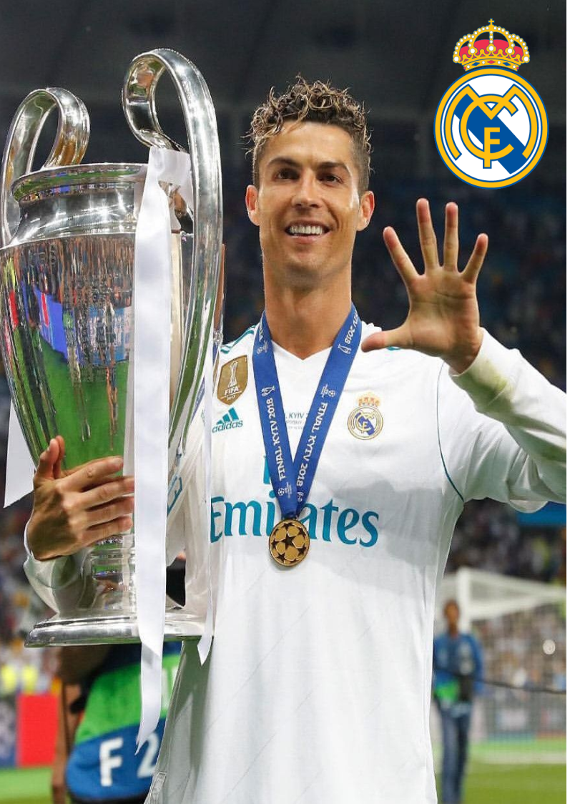
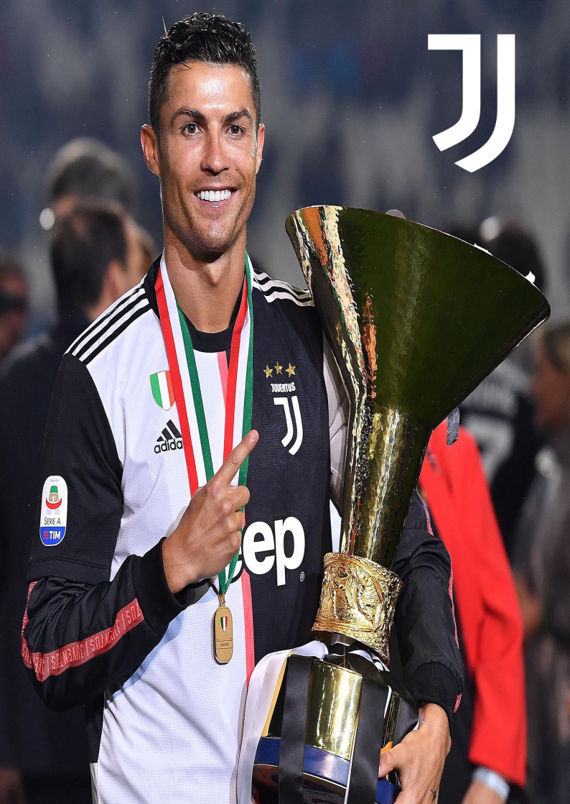
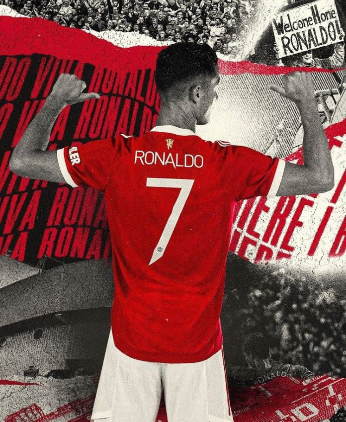

Diseñado por: Noelia Olea Zavaleta
Para mayor información  |
|
Su gran desarrollo futbolístico le acabó llevando a jugar sus primeros minutos como profesional cuando contaba con 17 años de edad, en el partido de clasificación para la Liga de Campeones de la UEFA del 14 de agosto de 2002 frente al Inter de Milán. Su debut en Primera División se produjo el 30 de septiembre frente al Sporting Clube de Braga. También se convirtió en el primer jugador en jugar en una temporada en los juveniles del Sporting, en el equipo filial y en el primer equipo. |
 |
|  | Para la temporada 2003-2004, Ronaldo se convirtió en el primer jugador portugués en la historia del Manchester United. Ronaldo firmó un contrato con el club para 5 años al precio de €12 millones de euros. Hizo su debut en la Premier League el 16 de agosto de 2003, ante el Bolton Wanderers. Para el periodo del 2007-2008 su salario en el club se elevó a £120,000 euros por semana (£31 millones en total) como parte de una extensión de contrato de cinco años con el United. Con la temporada 2008-2009 por delante, Ronaldo sufrió una lesión de tobillo que lo mantendría fuera de los terrenos de juego hasta el mes de octubre. Su recuperación llegó antes, y anotó su gol número 100 con el United en todas las competencias. |
El 11 de junio de 2009, el club inglés aceptó la oferta de £80 millones del Real Madrid, confirmándose dos semanas después que había sido el traspaso más caro en la historia del fútbol hasta la fecha. El 15 de septiembre de 2013, se anunció su renovación con el club, ampliándose el contrato hasta el final de la temporada 2017-18, con un salario de 17 millones de euros netos, convirtiéndolo en el futbolista mejor pagado del mundo. |
 |
|  | A pesar de haber estado meses negociando un nuevo contrato con el Real Madrid, el 10 de julio de 2018 Cristiano firmó un contrato por cuatro años con la Juventus de Italia tras completarse una transferencia por 100 millones de euros, que incluyeron 12 millones de euros adicionales por primas y derechos de formación. La transferencia fue la más alta hecha por un jugador mayor de 30 años y la más cara hecha por un equipo italiano. Desde su fichaje, Ronaldo confesó que necesitaba un nuevo desafío como razón fundamental para irse de Madrid, pero luego atribuyó la transferencia al poco apoyo que sintió demostrado por el presidente del Real Madrid, Florentino Pérez. |
Durante el mercado de fichajes de la temporada 2021-2022, Ronaldo hizo públicas sus intenciones de abandonar la Juventus, y el club lo puso a la venta. El 27 de agosto se confirmó que el Manchester United había llegado a un acuerdo con Juventus para fichar a Cristiano, sujeto a un acuerdo por términos personales, visa, y chequeos médicos. La transferencia fue reportada con un costo de 12 millones de euros iniciales, firmando un contrato de dos años, más uno opcional, y fue confirmado el 31 de agosto. |
 |
Para mayor información |